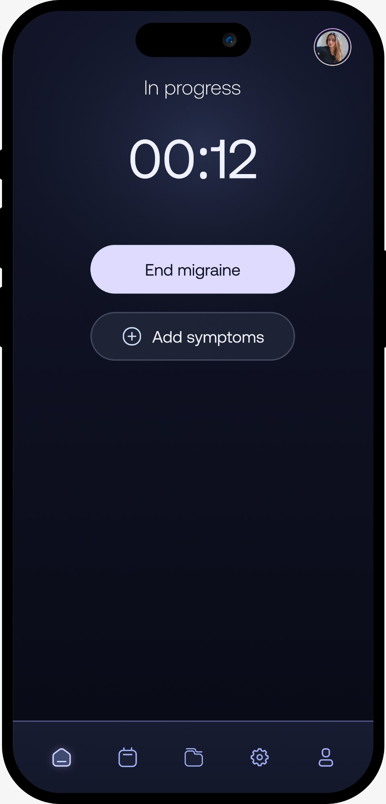
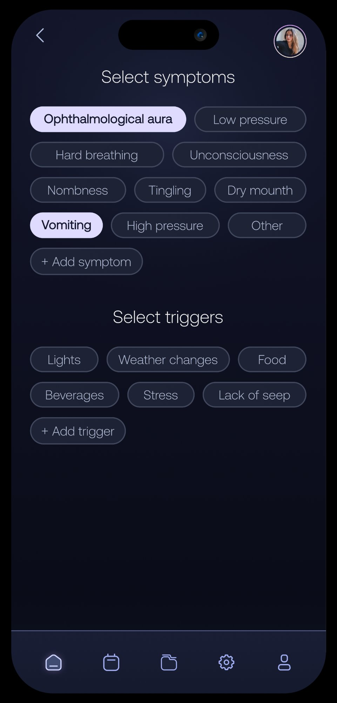
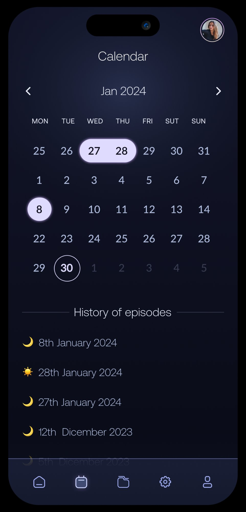
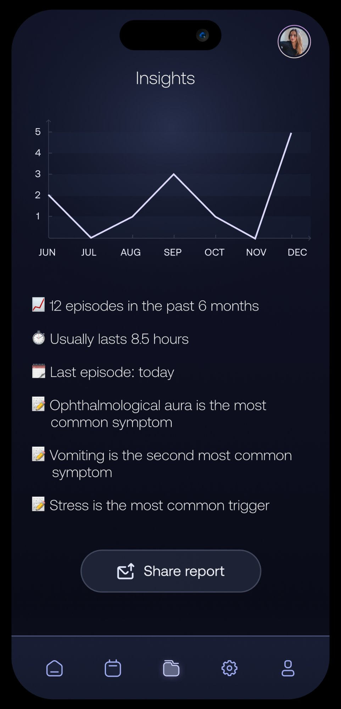

This project explores how a digital product can support people living with migraines by helping them track attacks, identify triggers, and reflect on patterns over time. Migraine is not a one-time event, but a recurring condition that affects daily life, productivity, and emotional well-being.
My role: research → principles → end-to-end flow → prototype
People experiencing migraines often struggle with:
Many existing solutions either feel too complex when users are vulnerable, or too simplistic to provide real value beyond logging data. This creates a gap between tracking information and actually learning from it.
The goal was to understand not only what users track, but why, at which moments tracking breaks down, and how existing tools fail to support meaningful reflection.
After synthesizing the research insights, it became clear that the core problem was not migraine tracking itself.
People are generally willing to log episodes, but logging alone does not help them understand their condition. The real challenge lies in making sense of fragmented data across time, triggers, and personal context, especially when users have limited cognitive and physical energy.
The problem, therefore, is not how to track migraines, but how to help users recognize patterns, reduce effort during vulnerable moments, and transform scattered information into clear and actionable understanding.
These principles guided the design decisions below ↓
One tap to start, minimal input during pain
When a migraine attack begins, users' cognitive abilities and visual sensitivity are reduced. At this moment, tracking should require as little effort as possible.
The interface focuses on a single primary action, with the option to add symptoms.

Quick selection, fully customisable
Migraine is influenced by multiple, often overlapping factors, but users struggle to understand which triggers are truly relevant for them.
Symptoms and triggers are organized in a separate section. This approach makes the data more reliable and easier to analyze over time.

Visual history of all episodes
Individual migraine entries offer limited value if taken out of context. The calendar section displays all past events in two different views to make it easier to explore personal data.
The insights section highlights recurring patterns, correlations, and trends — helping users understand what influences their migraines and supports informed reflection.

Doctor-ready insights at one tap
Many users struggle to clearly communicate their migraine history during medical visits. This product transforms personal tracking data into a structured report that can be reviewed or shared with a healthcare professional.
This reduces reliance on memory and turns personal data into actionable information.

This concept explores how a measured, research-driven UX approach can support people living with migraine, going beyond simple episode tracking.
The resulting experience focuses on: